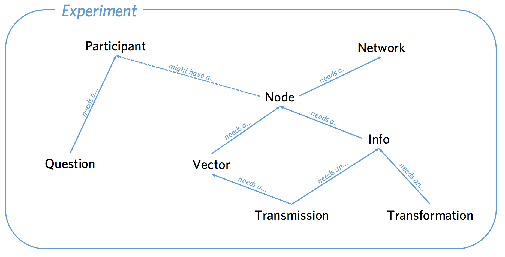

The classes involved in a Wallace experiment are: Network, Node, Vector, Info, Transmission, Transformation, Participant and Question. The code for all these classes can be seen in models.py. Each class has a corresponding table in the database, with each instance stored as a row in the table. Accordingly, each class is defined, in part, by the columns that constitute the table it is stored in. In addition, the classes have relationships to other objects and a number of functions.
The classes have relationships to each other as shown in the diagram below. Be careful to note which way the arrows point. A Node is a point in a Network that might be associated with a Participant. A Vector is a directional connection between a Node and another Node. An Info is information created by a Node. A Transmission is an instance of an Info being sent along a Vector. A Transformation is a relationship between an Info and another Info. A Question is a survey response created by a Participant.

Network
The Network object can be imagined as a set of other objects with some functions that perform operations over those objects. The objects that Networks have direct access to are all the Nodes in the network, the Vectors between those Nodes, Infos created by those Nodes, Transmissions sent along the Vectors by those Nodes and Transformations of those Infos. Participants and Questions do not exist within Networks. An experiment may involve multiple Networks, Transmissions can only occur within networks, not between them.
Columns
id- a unique number for every entry. 1, 2, 3 and so on...creation_time- the time at which the Network was created.property1- a generic column that can be used to store experiment specific details in String form.property2,3,4and5- same as above.failed- boolean indicating whether the Network has failed which prompts Wallace to ignore it unless specified otherwise. Objects are usually failed to indicate something has gone wrong.time_of_death- the time at which failing occurred.type- a String giving the name of the class. Defaults to "network". This allows subclassing.max_size- the maximum number of Nodes the Network can contain.full- a boolean indicating whether the network has reached its max_size.role- a String identifying the purpose of the Network. Any value can be used, but by default Wallace treats Networks with a role of "practice" differently.
Relationships
all_nodes- all the Nodes in the network.all_vectors- all the Vectors in the network.all_infos- all the Infos in the network.networks_transmissions- all the Transmissions in the network.networks_transformations- all the Transformations in the network.
Functions
Network.__repr__()
Return a simple string representation of the network.
Network.__json__()
Return a JSON object with all the attributes of the network.
Network.calculate_full()
Update attribute network.full to reflect current network size.
Network.fail()
Set network.failed to True and network.time_of_death to now. Instruct all not-failed nodes in the network to fail.
Network.infos([type, failed])
Return a list of infos in the network (i.e., infos made by nodes in the network). If specified, type filters by class. By default failed infos are excluded, to include only failed infos use failed=True, for all infos use failed="all".
Network.latest_transmission_recipient()
Return the node that most recently received a transmission.
Network.nodes([type, failed, participant_id])
Return a list of nodes in the network. If specified, type filters by class and participant_id filters by the nodes' associated participants. By default failed nodes are excluded, to include only failed nodes use failed=True, for all nodes use failed="all".
Network.print_verbose()
Print a verbose description of the network.
Network.size([type, failed])
Return the number of nodes in the network. If specified, type filters by class. By default failed nodes are excluded, to include only failed nodes use failed=True, for all nodes use failed="all".
Network.transformations([type, failed])
Return a list of transformations in the network (i.e., transformations by nodes in the network). If specified, type filters by class. By default failed transformations are excluded, to include only failed transformations use failed=True, for all transformations use failed="all".
Network.transmissions([status, failed])
Return a list of transmissions in the network. status can be "pending" or "received" (default is "all"). By default failed transmissions are excluded, to include only failed transmissions use failed=True, for all transmissions use failed="all".
Network.vectors([failed])
Return a list of vectors in the network. By default failed vectors are excluded, to include only failed vectors use failed=True, for all vectors use failed="all".
Node
Each Node represents a single point in a single network. A Node must be within a Network and may also be associated with a Participant.
Columns
id- a unique number for every entry. 1, 2, 3 and so on...creation_time- the time at which the Node was created.property1- a generic column that can be used to store experiment specific details in String form.property2,3,4and5- same as above.failed- boolean indicating whether the Node has failed which prompts Wallace to ignore it unless specified otherwise. Objects are usually failed to indicate something has gone wrong.time_of_death- the time at which failing occurred.type- a String giving the name of the class. Defaults to "node". This allows subclassing.network_id- the id of the network the node is in.participant_id- the id of the participant the node is associated with.
Relationships
network- the network the node is in.participant- the participant the node is associated with.all_outgoing_vectors- all the vectors going out from this Node.all_incoming_vectors- all the vectors coming in to this Node.all_infos- all Infos created by this Node.all_outgoing_transmissions- all Transmissions sent from this Node.all_incoming_transmissions- all Transmissions sent to this Node.transformations_here- all transformations that took place at this Node.
Methods
Node.__repr__()
Return a simple string representation of the node.
Node.__json__()
Return a JSON object with all the attributes of the node.
Node._to_whom()
Return the default value of to_whom for node.transmit(). Should not return None or a list containing None.
Node._what()
Return the default value of what for node.transmit(). Should not return None or a list containing None.
Node.connect(whom, [direction])
Return a list of newly created vector between the node and whom. Whom can be a specific node or a (nested) list of nodes. Nodes can only connect with nodes in the same network. In addition nodes cannot connect with themselves or with Sources. Direction specifies the direction of the connection it can be "to" (node -> whom), "from" (whom -> node) or both (node <-> whom). The defult is "to".
Node.fail()
Set node.failed to True and node.time_of_death to now. Instruct all not-failed vectors connected to this node, infos made by this node, transmissions to or from this node and transformations made by this node to fail.
Node.is_connected(whom, [direction])
Return a (list of) boolean(s) indicating whether the node has a connection to whom. Whom can be a single other node or a list of other nodes, if the former return a boolean, if the latter return a list of booleans. Direction specifies whether the required direction of the connection. The default value is "to", other values are "from", "both" and "either". Note that this method does not take a failed argument and it will only look along not failed vectors.
Node.infos([type, failed])
Return a list of infos created by the node. If specified, type filters by class. By default failed infos are excluded, to include only failed infos use failed=True, for all infos use failed="all".
Node.mutate(info_in)
Mutate the info_in - create a new info of the same type with its contents determined by info_in.mutated_contents() and then create a Mutation (a subclass of Transformation) linking the two.
Node.neighbors([type, direction])
Return a list of other nodes with an immediate connection to this node. If specified, type filters neighboring nodes by class. Direction specifies the direction of the connection and can be "to", "from", "both" or "either"; the default value is "to". Note that a failed argument should not be passed to node.neighbors() and the function only returns not failed nodes connected by not failed vectors.
Node.receive([what])
Receive incoming transmissions. What specifies what to receive. It can be a specific transmission. If what is not specified all pending transmissions are received. Received transmissions have their status set to "received" and their receive_time set to now. A list of all the infos associated with the received transmissions is passed to node.update().
Node.received_infos([type])
Return a list of infos received by the node (i.e., transmitted to the node and received). If specified, type filters by class. Note that this method does not take a failed argument and it returns all received infos (whether failed or not) whose associcated transmissions are not failed.
Node.replicate(info_in)
Replicate the info_in - create a new info of the same type with the same contents and then create a Replication (a subclass of Transformation) linking the two.
Node.transformations([type, failed])
Return a list of transformations created by the node. If specified, type filters by class. By default failed transformations are excluded, to include only failed transformations use failed=True, for all transformations use failed="all".
Node.transmissions([direction, status, failed])
Return a list of transmissions sent/received by the node. Direction can be "outgoing", "incoming" or "all (default is "outgoing"). Status can be "pending", "received", or "all" (default is "all"). By default failed transmissions are excluded, to include only failed transmissions use failed=True, for all transmissions use failed="all".
Node.transmit([what, to_whom])
Return a (list of) newly created transmission(s) of what to to_whom. What specifies what to send, it can be an info created by the node, a list of infos created by the node, a class of info (in which case all infos of that class created by the node are sent), None (in which case the node._what() is called to determine what to send), or a (nested) list of any of the above. To_whom specifies which node(s) the transmission(s) should be sent to, it can be a Node, a list of Nodes, a class of Node (in which case all neighbors of that type will be sent to), None (in which case node.to_whom() is called to determine who to send to) or a (nested) list of any of the above. Nodes can only transmit infos they have made and can only transmit to nodes they are connected to.
Node.update(infos)
Process received infos, called by node.receive(). By default this method does nothing. It is intended to be overwritten to provide subclasses of node new behaviors that occur automatically when they receive transmissions.
Node.vectors([direction, failed])
Return a list of vectors connected to the node. Direction specfies whether to include vectors that originate from or arrive at the node. It defaults to "all", but can also be "incoming" or "outgoing". By default failed vectors are excluded, to include only failed vectors use failed=True, for all vectors use failed="all".
Vector
A vector is a directional link between two nodes. Nodes connected by a vector can send Transmissions to each other, but because Vectors have a direction, two Vectors are needed for bi-directional Transmissions.
Columns
id- a unique number for every entry. 1, 2, 3 and so on...creation_time- the time at which the Vector was created.property1- a generic column that can be used to store experiment specific details in String form.property2,3,4and5- same as above.failed- boolean indicating whether the Vector has failed which prompts Wallace to ignore it unless specified otherwise. Objects are usually failed to indicate something has gone wrong.time_of_death- the time at which failing occurred.type- a String giving the name of the class. Defaults to "vector". This allows subclassing.origin_id- the id of the Node at which the vector originates.destination_id- the id of the Node at which the vector terminates.network_id- the id of the network the vector is in.
Relationships
origin- the Node at which the vector originates.destination- the Node at which the vector terminates.network- the network the vector is in.all_transmissions- all Transmissions sent along the Vector.
Methods
Vector.__repr__()
Return a simple string representation of the vector.
Vector.__json__()
Return a JSON object with all the attributes of the vector.
Vector.fail()
Set vector.failed to True and vector.time_of_death to now. Instruct all transmissions sent along this vector to fail.
Vector.transmissions([status])
Return a list of transmissions sent along the vector. Status can be "pending", "received", or "all" (default is "all").
Info
An Info is a piece of information created by a Node. It can be sent along Vectors as part of a Transmission.
Columns
id- a unique number for every entry. 1, 2, 3 and so on...creation_time- the time at which the Info was created.property1- a generic column that can be used to store experiment specific details in String form.property2,3,4and5- same as above.failed- boolean indicating whether the Info has failed which prompts Wallace to ignore it unless specified otherwise. Objects are usually failed to indicate something has gone wrong.time_of_death- the time at which failing occurred.type- a String giving the name of the class. Defaults to "info". This allows subclassing.origin_id- the id of the Node that created the info.network_id- the id of the network the info is in.contents- the contents of the info. Must be stored as a String.
Relationships
origin- the Node that created the info.network- the network the info is in.all_transmissions- all Transmissions of this Info.transformation_applied_to- all Transformations of which this info is the info_intransformation_whence- all Transformations of which this info is the info_out
Methods
Info.__repr__()
Return a simple string representation of the info.
Info.__json__()
Return a JSON object with all the attributes of the info.
Info._mutated_contents()
Return a string that will be the contents of an info created via a mutation of this info.
Info.fail()
Set info.failed to True and info.time_of_death to now. Instruct all transmissions and transformations involving this info to fail.
Info.transformations([relationship])
Return a list of transformations involving this info. Relationship can be "parent" (in which case only transformations where the info is the info_in are returned), "child" (in which case only transformations where the info is the info_out are returned) or "all" (in which case any transformations where the info is the info_out or the info_in are returned). The default is "all"
Info.transmissions([status])
Return a list of transmissions of this info. Status can be "pending", "received", or "all" (default is "all").
Transmission
A transmission represents an instance of an Info being sent along a Vector. Transmissions are not necessarily received when they are sent (like an email) and must also be received by the Node they are sent to.
Columns
id- a unique number for every entry. 1, 2, 3 and so on...creation_time- the time at which the Transmission was created.property1- a generic column that can be used to store experiment specific details in String form.property2,3,4and5- same as above.failed- boolean indicating whether the Transmission has failed which prompts Wallace to ignore it unless specified otherwise. Objects are usually failed to indicate something has gone wrong.time_of_death- the time at which failing occurred.type- a String giving the name of the class. Defaults to "transmission". This allows subclassing.origin_id- the id of the Node that sent the transmission.destination_id- the id of the Node that the transmission was sent to.- vector_id - the id of the vector the info was sent along.
network_id- the id of the network the transmission is in.- info_id - the id of the info that was transmitted.
- receive_time - the time at which the transmission was received.
- status - the status of the transmission, can be:
- pending - transmission has been sent, but not received.
- received - transmissions has been sent and received.
Relationships
origin- the Node that sent the transmission.destination- the Node that the transmission was sent to.vector- the vector the info was sent along.network- the network the transmission is in.info- the info that was transmitted.
Methods
Transmission.__repr__()
Return a simple string representation of the transmission.
Transmission.__json__()
Return a JSON object with all the attributes of the transmission.
Transmission.fail()
Set transmission.failed to True and transmission.time_of_death to now.
Transmission.mark_received()
Set transmission.status to "received" and transmission.receive_time to now.
Transformation
A Transformation is a relationship between two Infos. It is similar to how a Vector indicates a relationship between two Nodes, but whereas a Vector allows Nodes to Transmit to each other, Transformations don't allow Infos to do anything new. Instead they are a form of book-keeping allowing you to keep track of relationships between various Infos.
Columns
id- a unique number for every entry. 1, 2, 3 and so on...creation_time- the time at which the Transformation was created.property1- a generic column that can be used to store experiment specific details in String form.property2,3,4and5- same as above.failed- boolean indicating whether the Transformation has failed which prompts Wallace to ignore it unless specified otherwise. Objects are usually failed to indicate something has gone wrong.time_of_death- the time at which failing occurred.type- a String giving the name of the class. Defaults to "transformation". This allows subclassing.node_id- the id of the Node that did the transformation.network_id- the id of the network the transmission is in.info_in_id- the id of the info that was transformed.info_out_id- the id of the info produced by the transformation.
Relationships
node- the Node that did the transformation.network- the network the transmission is in.- info_in - the info that was transformed.
- info_out - the info produced by the transformation.
Transformation.__repr__()
Return a simple string representation of the transformation.
Transformation.__json__()
Return a JSON object with all the attributes of the transformation.
Transformation.fail()
Set transformation.failed to True and transformation.time_of_death to now.
Participant
The Participant object corresponds to a real world participant. Each person who takes part will have a corresponding entry in the Participant table. Participants can be associated with Nodes and Questions.
Columns
id- a unique number for every entry. 1, 2, 3 and so on...creation_time- the time at which the Participant was created.property1- a generic column that can be used to store experiment specific details in String form.property2,3,4and5- same as above.failed- boolean indicating whether the Participant has failed which prompts Wallace to ignore it unless specified otherwise. Objects are usually failed to indicate something has gone wrong.time_of_death- the time at which failing occurred.type- a String giving the name of the class. Defaults to "participant". This allows subclassing.worker_id- A String, the worker id of the participant.assignment_id- A String, the assignment id of the participant.unique_id- A String, a concatenation of the worker_id and assignment_id, used by psiTurk.hit_id- A String, the id of the hit the participant is working on.mode- A String, the mode in which Wallace is running: live, sandbox or debug.end_time- The time at which the participant finished.base_pay- The amount the participant was paid for finishing the experiment.bonus- the amount the participant was paid as a bonus.status- String representing the current status of the participant, can be:working- participant is workingsubmitted- participant has submitted their workapproved- their work has been approved and they have been paidrejected- their work has been rejectedreturned- they returned the hit before finishingabandoned- they ran out of timedid_not_attend- the participant finished, but failed the attention checkbad_data- the participant finished, but their data was malformedmissing notification- this indicates that Wallace has inferred that an MTurk notification corresponding to this participant failed to arrive. This is an uncommon, but potentially serious issue.
Relationships
all_questions- all the questions associated with this participant.all_nodes- all the Nodes associated with this participant.
Methods
Participant.__json__()
Return a JSON object with all the attributes of the participant.
Participant.fail()
Set participant.failed to True and participant.time_of_death to now. Instruct all not-failed nodes associated with the participant to fail.
Participant.infos([type, failed])
Return a list of infos produced by nodes associated with the participant. If specified, type filters by class. By default, failed infos are excluded, to include only failed nodes use failed=True, for all nodes use failed="all". Note that failed filters the infos, not the nodes - infos from all nodes (whether failed or not) can be returned.
Participant.nodes([type, failed])
Return a list of nodes associated with the participant. If specified, type filters by class. By default failed nodes are excluded, to include only failed nodes use failed=True, for all nodes use failed="all".
Participant.questions([type])
Return a list of questions associated with the participant. If specified, type filters by class.
Question
A Question is a way to store information associated with a Participant as opposed to a Node (Infos are made by Nodes, not Participants). Questions are generally useful for storing responses debriefing questions etc.
Columns
id- a unique number for every entry. 1, 2, 3 and so on...creation_time- the time at which the Question was created.property1- a generic column that can be used to store experiment specific details in String form.property2,3,4and5- same as above.failed- boolean indicating whether the Question has failed which prompts Wallace to ignore it unless specified otherwise. Objects are usually failed to indicate something has gone wrong.time_of_death- the time at which failing occurred.type- a String giving the name of the class. Defaults to "question". This allows subclassing.question_id- a number. E.g., each participant might complete three questions numbered 1, 2, and 3.question- the text of the question.response- the participant's response. Stored as a string.
Relationships
participant- the participant who answered the question.
Methods
Question.fail()
Set question.failed to True and question.time_of_death to now.